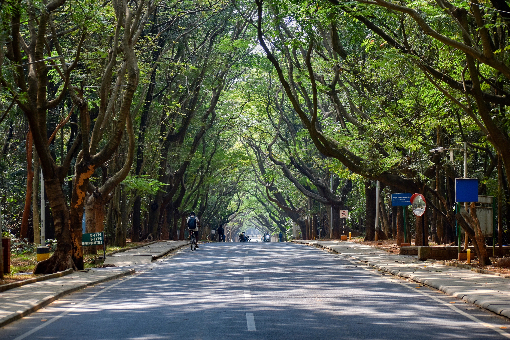
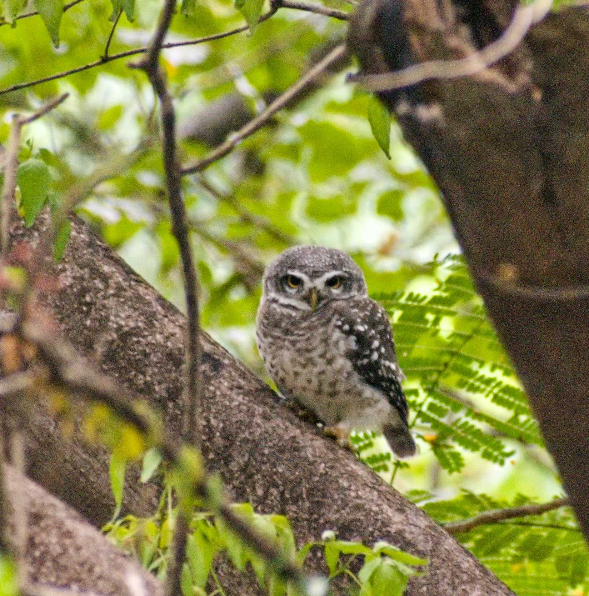
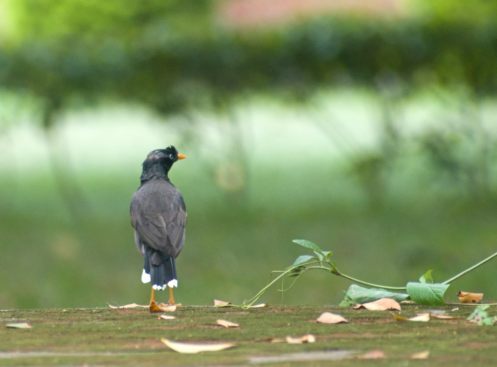
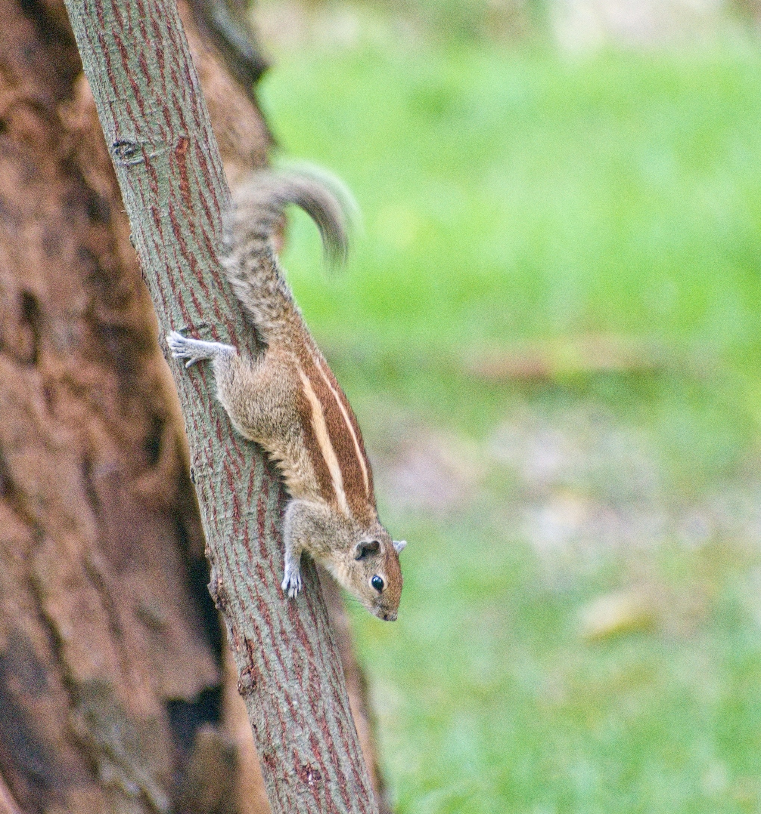
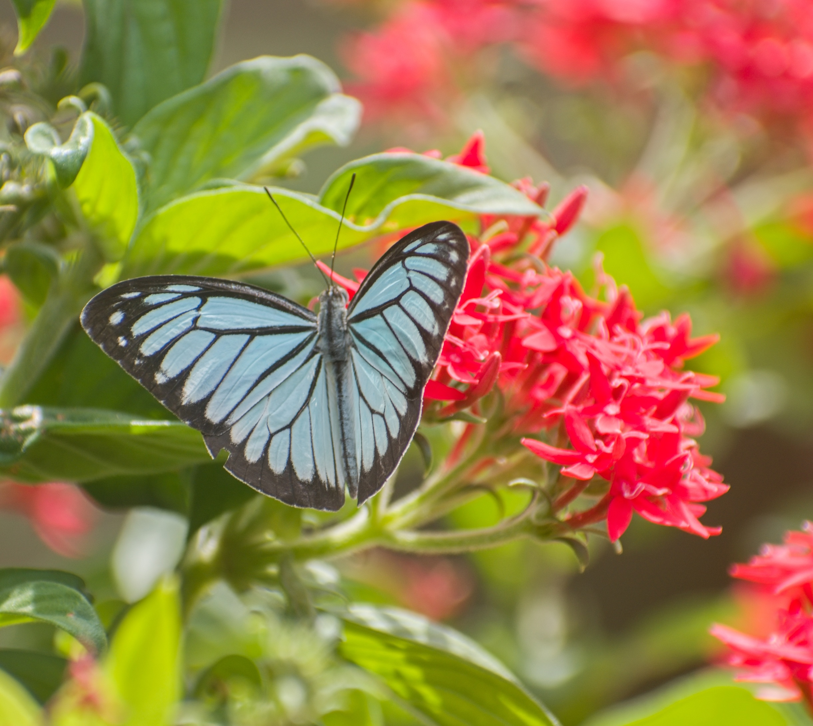
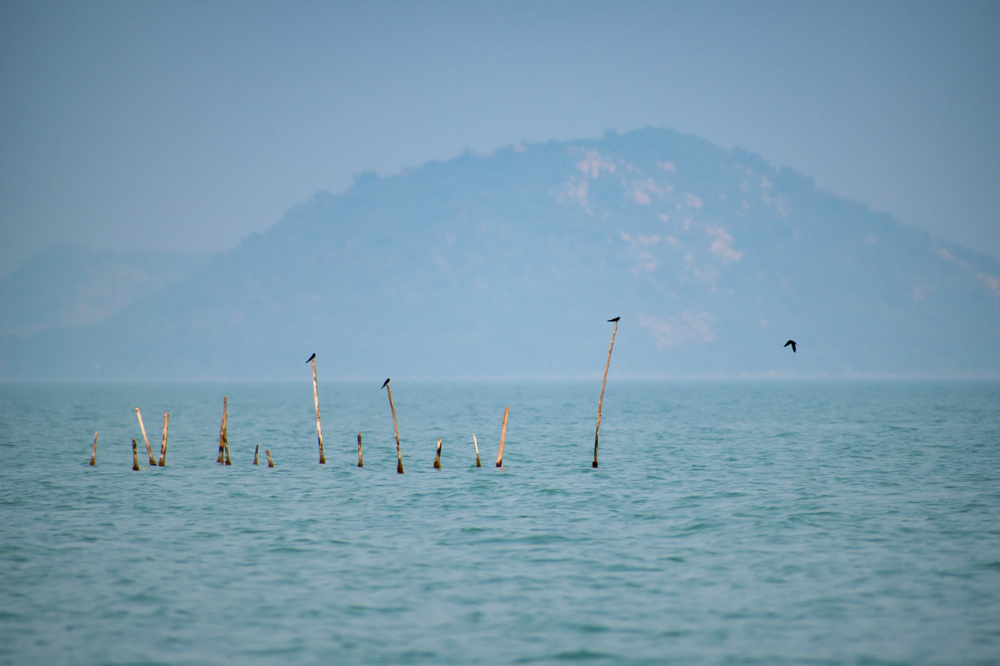
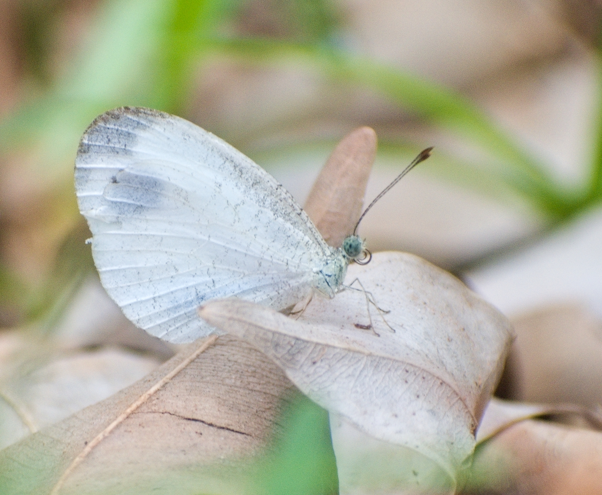
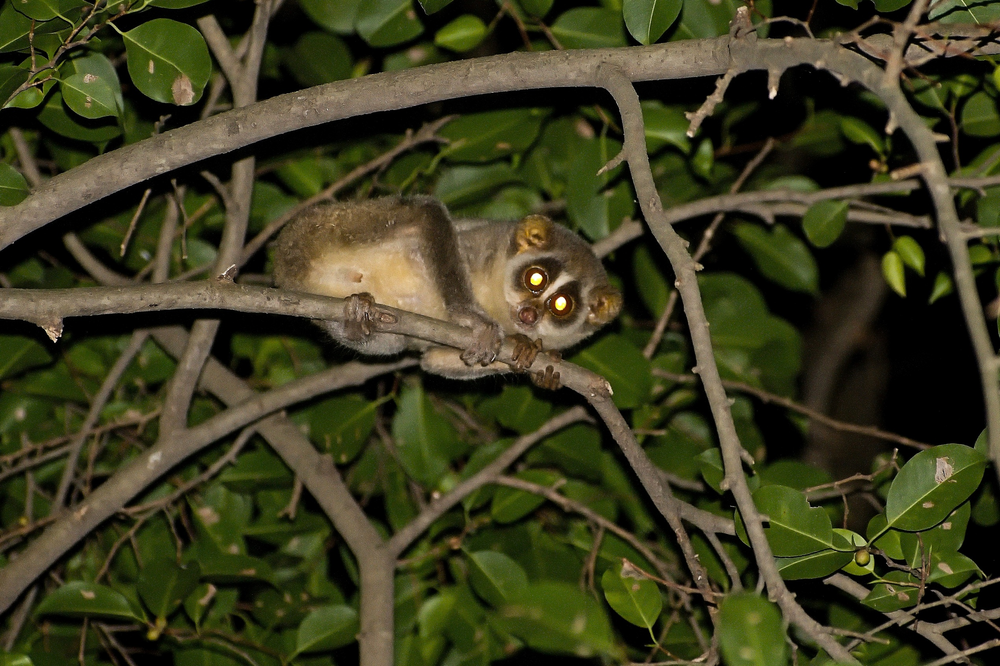
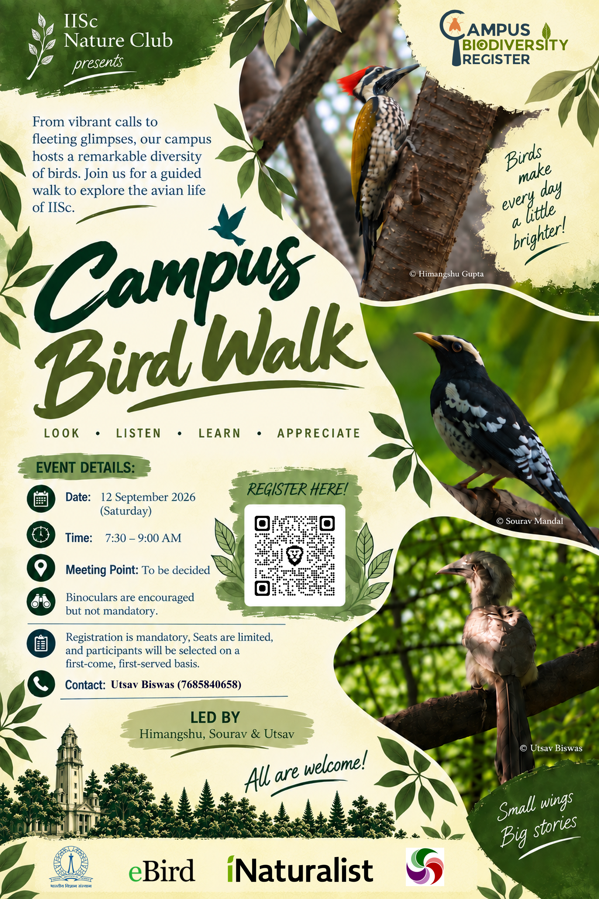
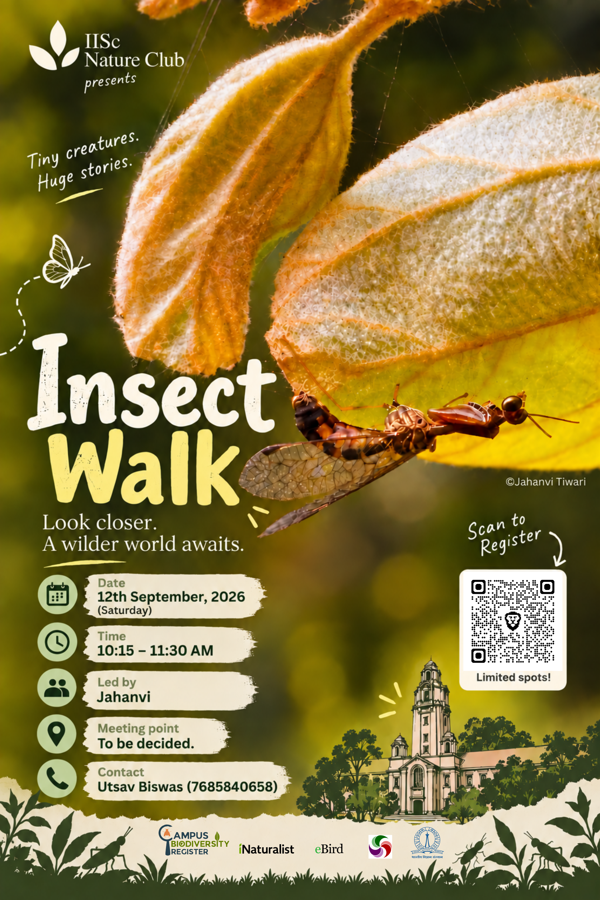

Nature photography · Bengaluru, India
Wild places.
Quiet moments.
A growing photographic archive of birds, wildlife, landscapes and the small lives encountered in the field.
Enter the archive ↓01 / Selected work
Moments
A selection of photographs from field observations, natural landscapes and encounters with wildlife.


02 / The archive
A broader
natural history.
Birds, mammals, insects, landscapes and nocturnal observations collected across different field sites.






03 / Activities
Nature walks &
Citizen Science.
Nature walks, biodiversity activities and citizen-science initiatives conducted through the IISc Nature Club.





04 / The photographer
Looking closely
at the living world.
I am a researcher and nature photographer based in Bengaluru, India. My work takes me into forests, grasslands, wetlands and urban landscapes, where photography becomes a way of observing and documenting biodiversity.
This website is a growing archive of those encounters — from birds and mammals to insects, plants and the landscapes they inhabit.
Back to top ↑